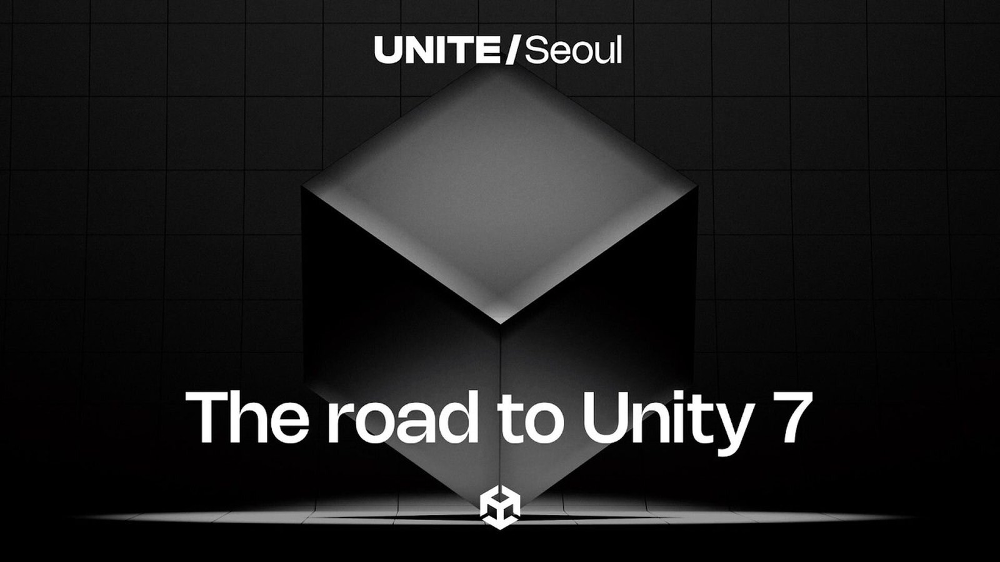

Unity 7 Unite 重點：Surface Cache GI、SSR／GTAO 與 Neural Resource Compression 指向新一輪 Rendering 更新
Unity 7 近期展示 Surface Cache GI、SSR、GTAO 與 neural resource compression 等方向，Surface Cache GI 主打不需預烘焙即可處理動態幾何／日夜變化，且以 URP 為重要落點。

Unity
★★★★☆
情報簡析
BRIEF｜來源已驗證，但目前證據深度不足以支持完整 Production Analysis。
情報重點
Unity 7 的 rendering 路線把 Surface Cache GI、SSR、GTAO 與資源壓縮放在同一波更新中，其中 Surface Cache GI 的吸引力是減少傳統 lightmap bake 依賴，讓動態幾何與時間變化更容易保持間接光一致；URP 也持續是核心目標。
導入判斷
對 Unity stylized 專案應先測 Surface Cache GI 是否會破壞 Toon ramp、臉部 SDF 與手工補光，再比較 APV／Lightmap 的記憶體與更新成本。展示中提到跨 PC ray tracing 到 mobile 60fps 的擴張方向，但實際平台能力與正式版成熟度仍需等可測版本確認。